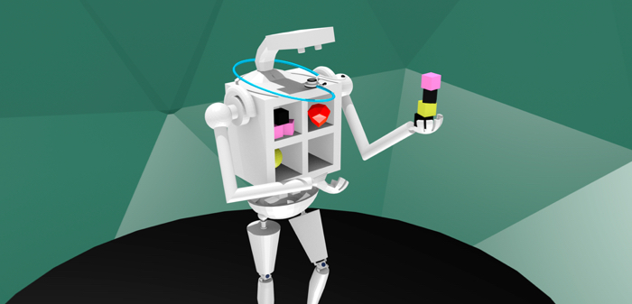

Posted on 9th September 2018
The C-med radio crackled to life:
“Seven-month-old boy found unresponsive. We started CPR and he has an IO and ET tube. We’re 5 minutes out.”
It was 8 a.m. and the emergency department team descended on the resuscitation room to prepare. I started scurrying around to finish some quick tasks to get my existing patients’ medical plans moving forward since I would surely be fully engrossed taking care of this infant.
Paramedics arrived and started performing chest compressions on the tiny, gray body on the stretcher. He was limp, cool to touch, eyes closed, pink foam bobbing up and down in the endotracheal tube with each squeeze of the bag valve mask.
“He has a rhythm.” Compressions paused. A faint pulse was palpable.
We thought the baby might make it. “Page the neonatologist and pediatrician to come down.” I needed all of the pediatric brains I had at my disposal.
Three and a half hours later, multiple rounds of medication, reintubation for a dislodged ETT, and an extra IO later, the baby was stabilized, and the pediatric transport team had just rolled the baby out to the ambulance to whisk the baby downtown to the children’s hospital. I emerged wearily from the resuscitation room. I was halfway through my 9-hour shift. The emergency department had exploded. In the 3.5-hours that I’d spent taking care of this infant, I would have normally evaluated at least 9 other patients. I had some major catching up to do, but I really wanted to sit in a quiet, dark room.
I walked into my next patient’s room. A young man with an ankle injury. I forced a friendly smile on my face.
“Hello. I’m Dr. Tien, one of the emergency room doctors. I’m so sorry for the wait.”
“I’ve been waiting here for the last 2.5 hours,” he said angrily. “Can you just tell me what the x-ray showed so I can get out of here?”
Empathy. We all want our doctors to have it. Doctors want to retain it. How do I allow myself to feel empathy but not be destroyed by it? I am expected to bring my A-game to every patient, which means I often have to compartmentalize my feelings. I defer the grief I have for children who die on my shift. I can’t allow myself to break down crying when I have to tell a mother of 3 young kids that she has a brain tumor. I have to empathize with the frustration of the patient who has been waiting while I’ve been working to save a life, but not become frustrated myself.
In reality, these things make me angry. They make me sad. But while I’m at work, they can’t make me anything. Even when I get home, these feelings stay locked away. Am I slowly becoming a robot? Is it possible for me to feel the full range of emotions of a human being anymore? Have the decades of keeping a calm, professional external demeanor despite whatever avalanche of anxiety, anger, sadness, or grief I feel inside been slowly stripping away my humanity?
In my experience, the paradox of being expected to empathize but having to emotionally disconnect results in 1 of 3 possible outcomes for the doctor: (1) becoming emotionally destroyed and quitting medicine, self-medicating with drugs or alcohol, or committing suicide; (2) becoming the emotionally-removed doctor who goes through the motions but isn’t emotionally invested in the patients; or (3) finding a balance between emotional detachment and emotional investment with the help of family, friends, colleagues and/or mental health professionals.
How do we help doctors find balance?
Doctors are generally loners. We suffer alone. We put on a brave face for the patients, staff, other doctors, and even our families. We need to learn to reach out to our colleagues in pain. No more judgement, especially from ourselves, for exposing our vulnerabilities. No one knows better the challenges we face than other doctors. We shouldn’t reserve our compassion just for our patients.


Analytical Research & Deve..
Square Pharmaceuticals Ltd.

Medical Promotion Officer (MPO)
Drug International Limited.

Medical Officer/ Physician
IBN SINA Pharmaceutical Industry


Shahana first female pro-VC of BSMMU
November 11, 2018

Princess Maria spends time with special children
November 11, 2018
Shahana first female pro-VC of BSMMU
November 11, 2018
Princess Maria spends time with special children
November 11, 2018
Princess Maria spends time with special children
November 11, 2018